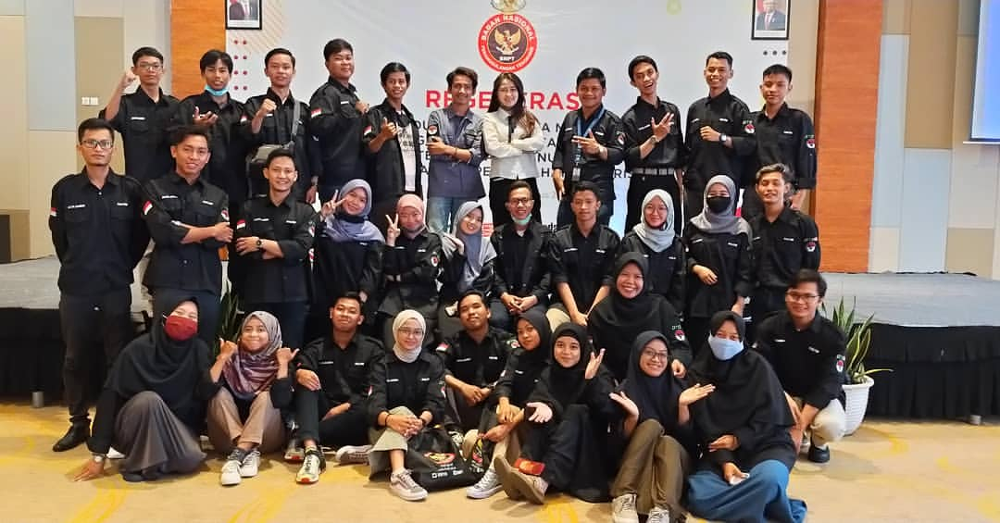

To Be Peace Ambassador Saat Pandemi
Pada November 2019 tepatnya sebelum pandemi virus Covid-19 masuk ke Indonesia, saya mendapatkan info
bahwa adanya pengrekrutan menjadi Duta Damai Kalimantan Timur. Setelah mendapatkan info tersebut saya
segera mendaftar lalu mengirim berkas-berkas sebagai syarat untuk pendaftaran, lama setelah pendaftaran
kira-kira 1 bulan lamanya, saya diinfokan bahwa saya lolos seleksi pertama yaitu seleksi berkas. Setelah itu
saya akan menjalani seleksi tahap kedua yaitu wawancara yang akan diselenggarakan seminggu kemudian, tetapi sesudah
tanggal yang ditentukan untuk menjalankan seleksi tahap kedua , Jakarta mendapatkan kasus pertama akan Covid-19
sehingga seleksi tahap kedua diundur hingga batas waktu yang tidak dapat ditentukan karena pewawancara berasal dari Jakarta
tepatnya Badan Nasional Penanggulangan Terorisme (BNPT) Pusat dan Pusat Media Damai (PMD) . Setelah sekian lama menunggu akhirnya pada bulan July 2020 akan diadakan
wawancara tetapi secara daring atau online karena tidak dimungkinkannya melakukan secara tatap muka. Saat setelah wawancara
saya langsung dites kemampuan bidang karena saat mendaftar saya memilih bidang IT. Saat selesai wawancara saya disuruh menuggu hasil wawancara
sampai minggu depan dikarenakan banyaknya pendaftar. Setelah satu minggu saya mendapatkan pemberitahuan bahwa saya terpilih untuk menjadi
Duta Damai BNPT Kalimantan Timur 2020 dan akan mengikuti pelatihan langsung oleh BNPT Pusat dan PMD.
Pelatihan Duta Damai Kalimantan Timur diselenggarakan di Hotel Harris Samarinda pada bulan Agustus 2020
saat diadakannya New Normal karena pandemi Covid-19. Sebelum mengikuti pelatihan semua peserta harus mengikuti Rapid test
untuk mencegah penularan dari Covid-19 tersebut. Setelah dinyatakan Non-reactive peserta akan diberi kunci kamar untuk beristirahat
dan bersiap siap untuk langsung mengikuti pelatihan disore harinya yaitu seminar seminar tentang perdamaian dan pencegahan berita HOAX.
Lalu hari kedua kami mengikuti pelatihan bidang yang mana saya adalah bidang IT, sehinnga saya dan teman teman bidang IT mendapatkan pelatihan membuat website untuk
Duta Damai Kalimantan Timur. Setelah 2 hari membuat website kami akan mempresentasikannya kepada BNPT Pusat maupun Samarinda dan juga PMD.
Saat semua telah selesai kami dilantik langsung oleh Deputi 1 Bidang Pencegahan, Perlindungan, dan Deradikalisasi BNPT untuk menjadi
Duta Damai Kalimantan Timur secara sah.
#DamaiItuIndonesia
#BeraniDamaiSaatnyaBeraksi
#SayNOtoHOAX!
